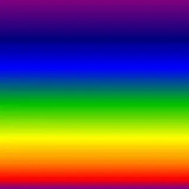

Для сравнения размеров файлов в иных форматах, картинки были сконвертированы в максимальном качестве (без потерь) программой Photoshop в JPEG, Webp и GIF.

В результате имеем (слева направо) png=790 KB, jpeg=723 KB, webp=376 KB, gif=147 KB.
Победителем по размеру файла выступает формат GIF. Лишь при очень сильном увеличении в gif-картинке можно разглядеть ступенчатость тонких волосков пера. При этом сохранились плавные переходы цвета и прозрачность фона.
Для следующего сравнения возьмем картинку с большей детализацией и количеством цветов:
В результате имеем (слева направо) png=1073 KB, jpeg=469 KB, webp=669 KB, gif=186 KB.
Как видим с высокой детализацией webp сжимает хуже чем jpeg, но зато, в отличии от jpeg, он поддерживает прозрачность, что дает этому формату преимущество перед png, так как при том же качестве webp почти на 50% уменьшил размер файла сохранив его функциональность.
При этом сравнении gif ожидаемо показал лучший результат размера файла и лишь при 4-х кратном увеличении на картинке можно заметить артефакты в окраске шкурки.
Сравним еще одну картинку:
В результате имеем (слева направо) png=413 KB, jpeg=342 KB, webp=304 KB, gif=122 KB.
В данном сравнении webp обошел jpeg по размеру файла, но проигрывает gif. GIF в данной картинке уже при 2-х кратном увеличении проявляет огрехи в равномерности окраски отдельных элементов картинки.
И в финале сравним как справляются различные форматы с изображением градиента большого количества цветов:


В результате имеем (слева направо) png=17,8 KB, jpeg=23,1 KB, webp=1,39 KB, gif=18,5 KB.
В данном сравнении webp обошел по размеру файла все другие форматы по всем требованиям.